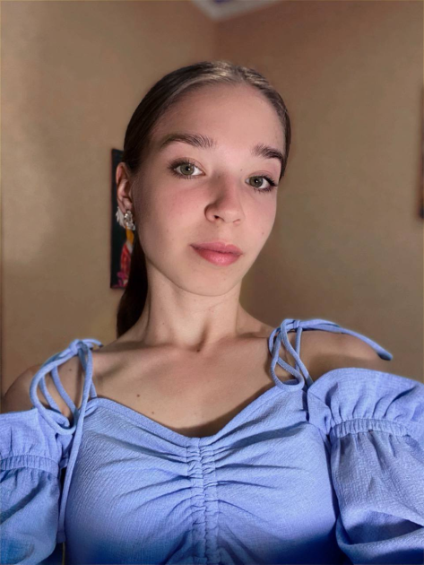

Я народилася 14 березня 2008 року в мальовничому селищі Дубов’язівка на Сумщині. Зараз навчаюся в 11 класі Дубов’язівського ліцею. Із дитинства мене захоплювали звуки природи: шелест листя, спів птахів, шум води у річці. Саме вони спонукали мене до творчості та допомагали бачити красу в найдрібніших деталях. Музика стала моїм першим натхненням, першим засобом вираження себе, глибини своєї душі. Гра на гітарі – для мене не просто хобі, а спосіб спілкування з власним серцем, висловлення емоцій та вражень.
Коли слова здавалися надто бідними, щоб передати глибину почуттів, я знаходила притулок у поезії. Із шести років тато вчив мене підбирати рими так, щоб це було невимушено та линуло з самого серця. Він часто писав для душі, тож я пішла його стопами. Спочатку твори виходили дуже короткими, не могли повністю розкрити мій початковий задум, але та «дитячість» захоплювала моїх рідних. Із віком вірші ставали довшими, а теми – глибшими. Вони переросли у мій особистий щоденник, куди я записувала почуття, мрії, страхи, переживання, радощі. У них я могла бути собою, не боячись осуду, без масок і рамок. Поезія – мій психолог, якому не треба чогось пояснювати, достатньо просто вилити душу в рядках.
Навчання в Дубов'язівському ліцеї допомогло не тільки здобути знання, а й підштовхнуло до творчого розвитку. Участь в олімпіадах і конкурсах допомогла мені вийти зі своєї зони комфорту, розвинути критичне мислення і впевненість у собі. Нерідко я виборювала призові місця, що ставало доказом того, що маю потенціал. Музика і літературна творчість завжди йшли поруч у моєму житті. Гра на гітарі допомагає мені знайти мелодію власного серця, а поезія – висловити її. Разом вони створюють гармонійний дует, який наповнює моє життя яскравими кольорами. Коли вірші з кожним разом подобались мені все більше, я задумалась над тим, що хотіла б поділитися ними не лише з рідними. Так народилась ідея створення цього сайту. Тоді найголовнішою задачею став пошук того сенсу, який я хочу передати читачу. «На руїнах душі проростають квіти щастя» - головна ідея електронної збірки із відповідною назвою «Руїни і Квіти». Наступною моєю ціллю є доповнити віршами цю збірку та видати її друком.
Коли слова здавалися надто бідними, щоб передати глибину почуттів, я знаходила притулок у поезії. Із шести років тато вчив мене підбирати рими так, щоб це було невимушено та линуло з самого серця. Він часто писав для душі, тож я пішла його стопами. Спочатку твори виходили дуже короткими, не могли повністю розкрити мій початковий задум, але та «дитячість» захоплювала моїх рідних. Із віком вірші ставали довшими, а теми – глибшими. Вони переросли у мій особистий щоденник, куди я записувала почуття, мрії, страхи, переживання, радощі. У них я могла бути собою, не боячись осуду, без масок і рамок. Поезія – мій психолог, якому не треба чогось пояснювати, достатньо просто вилити душу в рядках.
Навчання в Дубов'язівському ліцеї допомогло не тільки здобути знання, а й підштовхнуло до творчого розвитку. Участь в олімпіадах і конкурсах допомогла мені вийти зі своєї зони комфорту, розвинути критичне мислення і впевненість у собі. Нерідко я виборювала призові місця, що ставало доказом того, що маю потенціал. Музика і літературна творчість завжди йшли поруч у моєму житті. Гра на гітарі допомагає мені знайти мелодію власного серця, а поезія – висловити її. Разом вони створюють гармонійний дует, який наповнює моє життя яскравими кольорами. Коли вірші з кожним разом подобались мені все більше, я задумалась над тим, що хотіла б поділитися ними не лише з рідними. Так народилась ідея створення цього сайту. Тоді найголовнішою задачею став пошук того сенсу, який я хочу передати читачу. «На руїнах душі проростають квіти щастя» - головна ідея електронної збірки із відповідною назвою «Руїни і Квіти». Наступною моєю ціллю є доповнити віршами цю збірку та видати її друком.